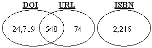
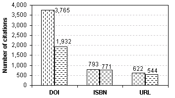
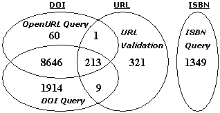

Vol. 12 No. 4, October 2007
Vol. 12 No. 4, October 2007 | ||||
Digital libraries continue to grow enormously, and rapidly as more and more people access the networked digital environment. Additionally, people gather, build and manage their very own personal collections, and have come to expect those to be integrated with online digital libraries. While this ongoing growth offers an immense power of information to its users, it poses several challenges as well. Finding useful information, effectively and efficiently, continues to be the primary challenge.
Recommender Systems (McNee et al. 2002, Torres et al. 2004, McNee et al. 2006) offer a viable solution, but rely heavily on personalization (Rashid et al. 2002) i.e. they need to know the user before they can help her find something useful. Recommender Systems compare users with similar interests, and predict new items of interest to the user, given some information about her profile. These systems build users' profile by collecting information using a combination of explicit and implicit methods, and draw on the similarities (or dissimilarities) of these profiles to generate recommendations for users (Maltz et al. 1995).
Users' personal reference collections are an implicit means to learn about their interests, and are a close representative of their profiles. These collections, therefore, offer a great potential for systems such as a reference recommender system, to offer personalized tools and services in digital libraries. However, recommender systems first need to be able to harvest these collections effectively before they can use these to build users' profile. And, that can be made possible if these references had a valid ID that uniquely identified them. Unique identification of identical references in different users' collections is the key to building similarities between the users. It opens the door to matching references between collections, and to obtaining additional metadata from which to generate recommendations. In order to realize the potential of references in users' personal collections, it is important that we uderstand their nature and assess them in terms of their resolvability.
Most recommenders in digital libraries have focused on mining the implicitly rated references in the reference section of a paper (i.e., public collections of rated references). The cited references in a technical paper are indicative of their support for the paper, and are considered by the recommenders as implicit 'ratings' for the paper. Quickstep and Foxtrot recommender systems explored recommending on-line research papers to academic researchers (Middleton et al. 2004). TechLens used references in the published paper to build correlations between papers (McNee et al. 2002).
Our work focuses on references in users' personal collections - to understand how these collections can be uniquely identified, and to assess their potential for developing digital library services using recommenders. We are not the first to explore the quality and nature of references. Numerous reference analysis tools and methods have been developed to support bibliometric research, including citation counts and frequencies, impact factors (Garfield 1955), clustering (Carpenter et al. 1973), bibliographic coupling (Kessler 1963), and co-citation analysis (Small 1973). However, all these analyses have been performed on published citations, and hinge on the degree of citation accuracy and completeness.
In this study, we explore resolvability of references in users' personal collections to unique identifiers, and to their online sources. We analyzed the contents of 96 reference collections from university students, faculty and staff, maintained in the RefWorks (http://www.refworks.com/) references management system, to address two primary research questions:
A reference is resolvable if it has (a) a valid unique ID that leads to its online source, or (b) enough information such as title, author, etc., that could be used to resolve it to its online source. An online source of a reference establishes definitive online presence of the reference, either by leading to its full-text, or to its description. For example, a valid unique ID for a reference to a Journal article is a DOI (Digital Object Identifier), which leads to its full-text, and a valid unique ID for a reference to a book is its ISBN (International Standard Book Number) number, which leads to its description (in some cases, to its full-text). A reference to an online entity (URL - Universal Resource Locator) may not be its unique identifier, but it reaffirms its existence. A valid DOI, ISBN or a URL of a reference is expected to lead us to its online source, provided the online source is available. If the online source is not available (it might not be in digital form yet), we conclude that the ID for the reference is not valid. Our dataset consisted of references to various types such as references to Journal articles, whole books, book chapters, web pages, newspaper articles, maps, reports, etc. Of all the different reference types, the ones that could possibly have a unique ID are
|  |
| Total potentially resolvable references:
24,719 + 548 + 74 + 2,216 = 27,557 (90.84%) |
Figure 1 shows the total number of potentially resolvable references, i.e., references that can be represented using a valid unique ID. Since DOI and ISBN numbers are unique IDs, combining these (minus the ones that are common in both) gives the total number of references that could possibly have a unique ID. In addition, there are 74 references that contain a URL. Assuming that all these references have a valid ID and are available online, we get the total number of references that are potentially resolvable as 27,557 (90.84%).
| Reference Types | DOI | ISBN | URL |
|---|---|---|---|
| Journal | 3,765 | 545 | |
| Conference Proceedings | 3 | ||
| Book Whole | 777 | ||
| Book Edited | 15 | ||
| Monograph | 1 | ||
| Report | 16 | ||
| Generic | 36 | ||
| Web Page | 14 | ||
| Newspaper Article | 5 | ||
| Book Section | 1 | ||
| Map | 1 | ||
| Hearing | 1 | ||
| Totals | 3,765 | 793 | 622 |
Table 1 shows the distribution of references that in actual have at least one of the three possible IDs. For example, number of references having an ISBN ID is the sum of references to [Book Whole (777) + Book Edited (15) + Monograph (1)], which totals to 793. There are other reference types that have ISBN numbers, but they are not included in ISBN count (i.e. towards references that are resolved via ISBN query) because those references are defined under reference type other than Book Whole, Book Edited, and Monograph. Similarly, there are 3,765 references having DOIs. However, all references having a URL, regardless of their reference type, are counted towards the references that can be resolved via URL query, because a URL in any reference can lead us to its online source, in which case it would be considered resolvable.
Not all the IDs that were available in the reference collections resolved to their respective online sources. Reasons varied from reference not available online to mal-formatted IDs to actually incorrect IDs. Figure 2 shows the original resolvability of users' personal reference collections. Out of the total of 30,336 references, there were 5,180 references that had an ID, out of which 3,247 actually resolved, giving a total original resolvability of 10.70%.
| Present
3,765+793+622 = 5,180 (17.07%) |
1,932+771+544 = 3,247 (10.70%) |
|  | |
We used a combination of reference resolving queries to asses the resolvability of references in our dataset.
|  |
| Resolvability = 60+1+8646+213+321+1349+1914+9 = 12,513 (41.25%) |
We executed four different queries to assess the resolvability of our dataset. Recall that when a query fetched a valid unique ID for a refernce, the reference was concluded to be resolved. Figure 3 shows the breakdown of the four queries, and the contribution of each towards the cumulative resolvability. The cumulative resolvability is expressed in terms of the cumulative resolvability of the three valid IDs i.e. DOI, ISBN and URL. ISBN query resolved 1,349 references with ISBN IDs, whereas URL validation resolved 544 references. However, out of the 544 references with URL, there were 223 references that had a valid DOI as well. These DOIs were fetched using one of the two queries - OpenURL query, or DOI query. Together, the two queries resolved 11,164 references with valid DOI IDs, with an overlap of 8859 references between them. ISBN query did not have any overlap with any other query.
Almost all but 61 DOIs that were resolved by OpenURL query were also resolved by the DOI query. Additionally, DOI query resolved another 1,923 valid unique DOIs that OpenURL query could not. These numbers should be interpreted mindful of the fact that all these resolved references include the references that resolved in the original dataset as well i.e. 3,247 (figure 2). The total resolvability from figure 3 can thus be computed by summing up all the individual components, which comes out to be 12,513 references, or approximately 41.25% of the total references.
Since a large number of references with unique IDs had DOIs (figure 1), we wanted to ensure their validity i.e. if the reference type had been correctly assigned to the references. We created a random sample of 100 references to articles in Journals and in Conference Proceedings, and manually verified them online. Only 3 of the 100 references could not be traced back to their respective online sources, giving us an assurance that at least 97% of the total references with DOIs were indeed references to articles in Journals and in Conference Proceedings.
Our resolvability computation (figure 3) found that over 41% of references in our dataset are reliable and accurate. This is significantly higher than the original resolvability (10.70%, figure 2). We expect the computed resolvability of the references to be even higher, because not all the intellectual content has been digitized yet. So, if there were any references that did not have any DOIs, we assumed them to be not resolvable programmatically. However, as the visual inspection results revealed, the very same references could actually be resolved.
We noticed that some references had ISBN numbers even when they did not belong to any of the reference types - Book Whole, Book Edited, and Monograph. Similar was the case with DOIs. References in such cases were ignored for this study, and were not attempted to resolve. However, we believe that a closer look at these might uncover references that either have an incorrect reference type, or are additional reference types that can possibly have a valid unique ID.
We resolved the references via querying them at some of the authoritative resolvers in the digital libraries arena, i.e., CrossRef and WorldCat Libraries, which provide services, as well as the APIs to accomplish the reference lookup. However, we believe that adding additional services for lookup (for example, Citation Matcher from PubMed) will considerably enhance the resolvability.
The original dataset from RefWorks did not differentiate between references with ISBN numbers, and the ones with ISSN numbers. An ISBN is a unique ten or a thirteen digit ID of an intellectual entity called a book. The ISSN is a unique ID of a much larger package called a journal which may contain thousands of intellectual entities called articles, many, though not all, are now digital. We needed to separate these two types of references to accurately compute resolvability because a single ISSN applies to the entire population of references within a journal, and is not a unique ID of a reference. We used the checksum verification, and the format checking to ensure that we take into account only the references with ISBN numbers, and not the ones with ISSN numbers.
To understand the nature of users' personal reference collections in terms of their resolvability, and how it could be used to enhance library services such as building a reference recommender system, we examined 30,336 references maintained by 96 users. These users were selected from faculty, researchers, graduates, and undergraduates who used RefWorks reference management web-based tool at the University of Minnesota. The references in users' collections were of many different types, including but not limited to references to Journals, to Books, to Reports, and to Web pages.
To the best of our knowledge, there has not been any study that evaluates resolvability of users' personal references collections. In this study, we establish an in-depth understanding of uniquely identifying such collections, and assessing their quality in terms of their resolvability. Using the composite approach to resolvability, we were able to enhance the original resolvability of these collections from under 11% to over 41%. We should state that this is a complementary reference resolution technique that should not attempt to replace formal reference resolution methods, but rather augment them.
With over 90% of potentially resolvable references, we believe, users' personal collections have a tremendous potential of building, and supporting digital library services. Vastly enhanced resolvability of these collections allows more perspective to the designers of systems like reference recommender systems, and offers them endless opportunities to build tools, and personalized digital library services that are built on top of personal collections.
We would like to thank RefWorks for allowing us to use a reference-sharing feature to harvest references from consenting participants. This research is funded by a grant from the University of Minnesota Libraries, and grant IIS- 0534939 from the National Science Foundation.
| Find other papers on this subject | ||
© the authors, 2007. Last updated: 18 August, 2007 |
|